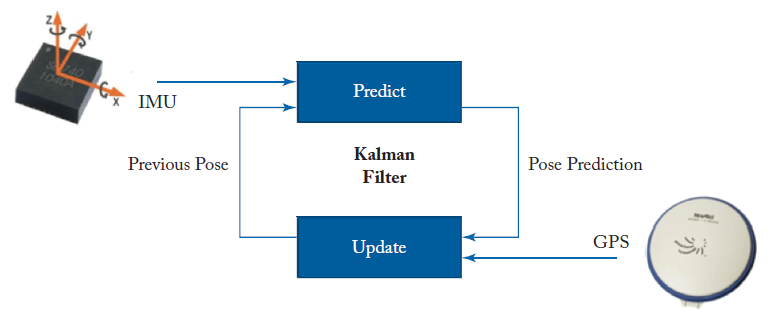

Lecture 1: Fundamental Architecture of Self-driving (SD) Systems
Components of a self driving system
At its core, there are three main functionalities to SD systems. The first is sensing, which means collecting data via LiDAR (a sort of "light" radar), camera, and GPS/IMU. This sensing component is responsible for the collection of raw data about the surrounding (Camera, LiDAR) or the geographic position (GPS/IMU). The second functionality is perception which consists of interpreting the data provided by the sensing component for localization, object recognition, and object tracking. The final layer is decision which relates to path planning, action prediction, and obstacle avoidance. We discuss the components one-by-one.
Sensing
Autonmous cars have multiple sensors that they combine to form estimates of their position. These sensors include:
- IMU/GPS: The GPS provides an accurate estimate of the position of the car; however, it can only do so at a rate of 10 Hz. A low-precision high-frequency (200 Hz) component called the IMU (Inertial measurement unit) measures the acceleration of a car. As such, the position it calulates has an error which accumulates quadratically with time. Using both GPS and IMU one can, both accurately and with a very high frenquency, estimate the position of the car.
- LiDAR: is used for mapping, obstacle localization and avoidance. It emits a ray and measures the time of reflection to determine distance. LiDAR produces HD maps, localizes a moving vehicle using the map. It operates at a frequency of 10 Hz.
- Camera: an autonomous car has eight 1080p cameras mounted in front, behind, and to the sides of the car. Each camera runs at 60 Hz. It is used to detect pedestrians, traffic lights, and lanes.
- Radar and sonar: does not flow through the computation pipeline, as it is required to be low-latency, and is a last line of defense against collision. Measures distance and velocity from nearest object in vehicle's path.
Perception
With the sensor data, one can perform localization, object detection, and object tracking. To combine the GPS and IMU, a Kalman Filter is used as follows 